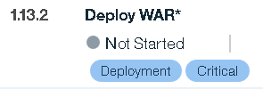

Managing task tags
Tags are organizing elements that you can add to tasks. You can filter deployment plans by tag. For example, during a deployment to a production environment, you might disable tasks with the `DEV_only` tag, which is intended to be used only in development environments.
To add a tag to a task, complete the following steps:
- On the Deployment Plan Details page, select a task or task group, and then click Manage Tags . You can select multiple tasks and groups.
- In the Manage Tags for Selected Tasks dialog box, in the Common Tags list, select tags. You can create a new tag by typing a name in the list's text box.
-
Click Save. Tags are displayed on the task rows in the Deployment Plan Detail page. In the following figure, the Deploy WAR task has two tags assigned to it,
Deployment, andCritical.
The tags used by a deployment plan are displayed on the Deployment Plan Detail page Versions tab. To render tasks with a specific tag
Not Applicablefor a deployment, clear the tag. Tasks with theNot Applicablestatus cannot be started.
Parent topic: Tasks